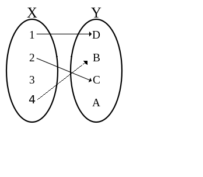
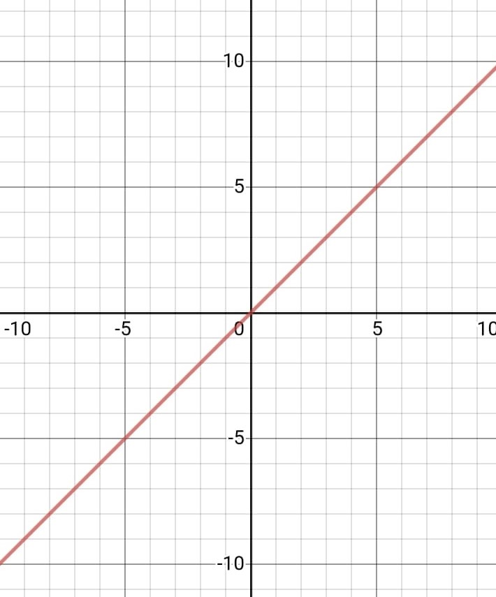
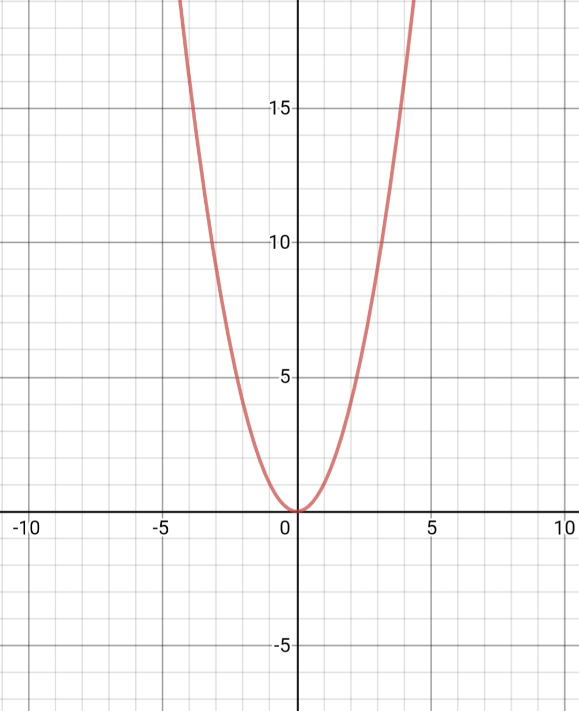
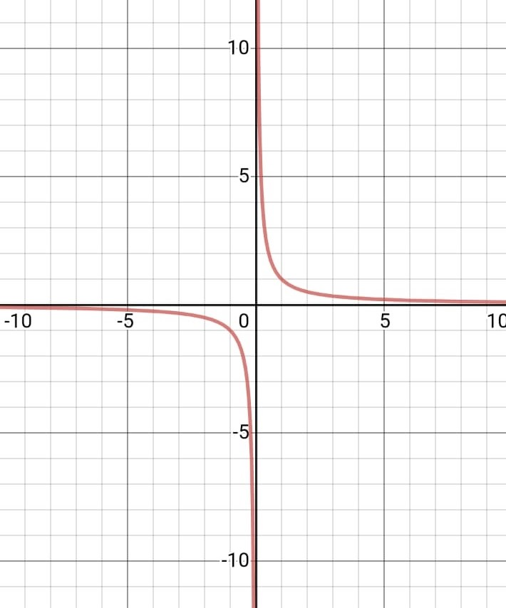
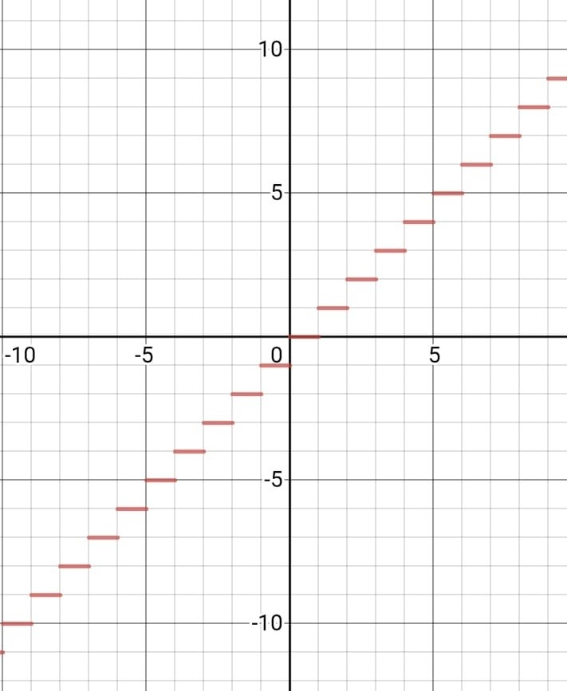

Définition: L’ensemble de définition (Df) d'une fonction \(f\) est formé de tous les réels \(x\) (des éléments de \(A\)) pour lesquels les réels \(f(x)\) existent en d'autres mots \(x\) admet une image \(y\) par \(f\).
Explication: Après avoir enlevé les éléments ou les sous ensembles de \(A\) qui n’ont pas d’images est le domaine de definition. L’ensemble de définition de \(f\) est formé de tous les réels \(x\) pour lesquels de réel \(f(x)\) ou l’image existe.

Dans l’exemple ci dessus 3 n’a pas d’image, alors on ne le considère pas. En d’autres mots on a défini l’ensemble de définition. L’ensemble de définition d’une fonction est parfois appelé le domaine de définition, ou simplement le domaine de cette fonction. Tous les antécédents qui n’ont pas d’images n'appartiennent pas au domaine de cette fonction.
Diagrames:

\(f(x) = x\) , le domaine est \(R\) car pour tout \(x\), \(y\)=\(x\).

\(f(x) = x^2\), le domaine est \(R\) car pour tout \(x\), \(x^2\) existe.

\(f(x) = 1/x\), , \(x\) \(≠\) \(0\)(lorsque \(x\) est \(0\), \(1/x\) n’est pas définis), donc le domaine est \(R - {0}\).
\(f(x) = \sqrt{x}\), \(x ≥ 0\) (on ne peut pas trouver la racine carré d'un nombre négatif sur \(R\), donc cette fonction est valable seulement pour les nombres positifs), donc le domaine est \(R+\).
\(f(x) = |x|\), comme \(|x|\) existe pour tout \(x\) le domaine est \(R\).

\(f(x) = E(x)\) , ici aussi \(E(x)\) existe pour tout \(x\), le domaine est \(R\).
Exemples :
\(f(x) = 3x^2-5x-2\)
Domaine de définition: Pour fonctions de deuxième degré, la domaine de définition est \(R\).
Donc, \(D\)\(f\) \( = R\)
\(f(x) = 10x^2+20\)
Donc, \(D\)\(f\) \( = R\)
\(f(x)= -13x^2-x+12\)
Donc, \(D\)\(f\) \( = R\)
\(f(x) = \sqrt{x-1}\)
Domaine de définition: Pour une fonction racine carré, le domaine de définition est l’intervalle sur laquelle l’expression sous le radical est positif.
Donc, il faut trouver l’intervalle où x-1 est positive.
\(x-1 ≥ 0\)
\(x ≥ 1\)
Donc, \(D\)\(f\) \(= [1; ∞ [\)
\(f(x) = 3\sqrt{-2x+4}-7\)
Donc, il faut trouver l’intervalle où x+5 est positive
\(-2x+4 ≥ 0\)
\(2 ≥ x\)
Donc, \(D\)\(f\) \(= ]- ∞, 2]\)
\(f(x) = \)\(8\)⁄\(9x\)
Domaine de définition: Le domaine de definition d’une fonction rationnelle est \(R\) - {toutes les racines du dénominateur}.
Donc, il faut trouver la racine de 9x: qui est 0.
Donc, \(D\)\(f\) \( = R - {0}\)
\(f(x) = \) \(3x+23\over x+5\)
Domaine de définition: Le domaine de definition d’une fonction rationnelle est \(R\) - {toutes les racines du dénominateur}.
Donc, il faut trouver la racine de \(3x + 5\) : qui est \(-5\over 3\).
Donc, \(D\)\(f\) \( = R - \) {\(-5\over 3\)}
\(f(x) = \) \(x^2+4x - 1\over5x+6\)
Domaine de définition: Le domaine de definition d’une fonction rationnelle est \(R\) - {toutes les racines du dénominateur}.
Donc, il faut trouver la racine de \(5x +6\) qui est \(-6\over5\).
Donc, \(D\)\(f\) \( = R - \) {\(-6\over 5\)}
\(f(x) = \) \(E(0.5+E(x))\)
Domaine de définition: Si on observe bien, on voit que cette fonction peut être réécrit dans une façon plus simple.
On sait que \(E(x) ≤ 0.5+E(x) < E(x) +1\)
Donc, \(E(0.5+E(x)) = E(x).\)
Domaine de definition:
La fonction \(E(x)\) est continue sur \(R\).
Donc, \(D\)\(f\) \( = R\)
\(f(x) = \) \(E(x+5)\over2E(x) - 1\)
Domaine de definition:
Le domaine de définition est \(R\) - {racines du denominateur}
Donc, il faut trouver x pour que \(2E(x)-1\) = 0
\(E(x) = 0.5\) qui n’est pas possible
Donc, \(D\)\(f\) \( = R\)
\(f(x) = \) \(|6x + 31|\)
Domaine de définition: Pour des fonctions de valeur absolue, la domaine de définition est \(R\).
Donc, \(D\)\(f\) \( = R\)
\(f(x) = \) \(2\over|x+3|\)
Domaine de définition: Le domaine d’une fonction de valeur absolue a un domaine de définition \(R\). Mais, on remarque que dans la fonction, il y a une autre fonction in0verse.
Donc, trouvons la domaine de définition de \(2\over x+3\).
\(x+3 ≠ 0\)
\(x ≠ - 3\)
Donc, \(D\)\(f\) \( = R - \){\( - 3\)}
\(f(x) = \) \(\sqrt{3 - x\over x - 4}\)
\(\sqrt{x - 4}\) \(> 0\)
\(x - 4 > 0\)
\(x > 4\) donc le domaine de définition est \(] 4; ∞ [\)
\(f(x) = \) \(1\over cosx\)
\( cosx ≠ 0\)
\( cosx = 0 \) Pour \( x = \) \(π\over 2 \) \( (2n + 1) \) où n est un nombre relatif.
Domaine de définition est \( = R - \){\(π\over 2 \) \( (2n + 1) \)}